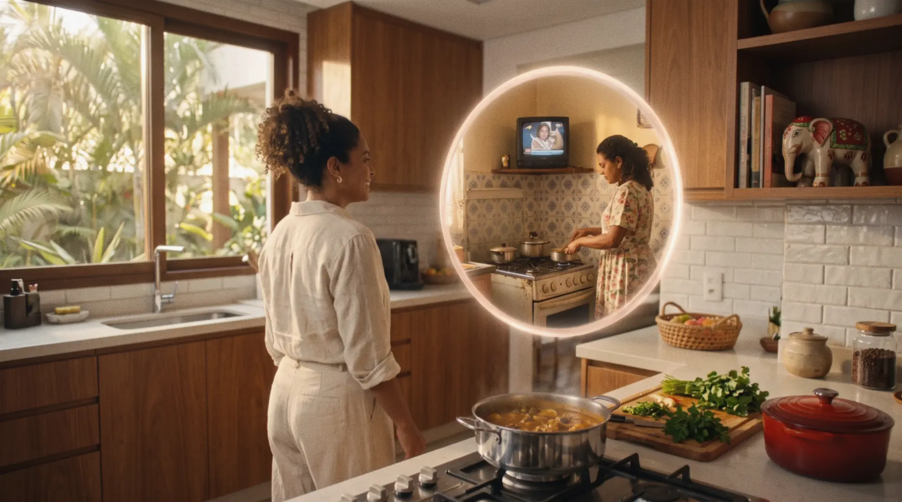
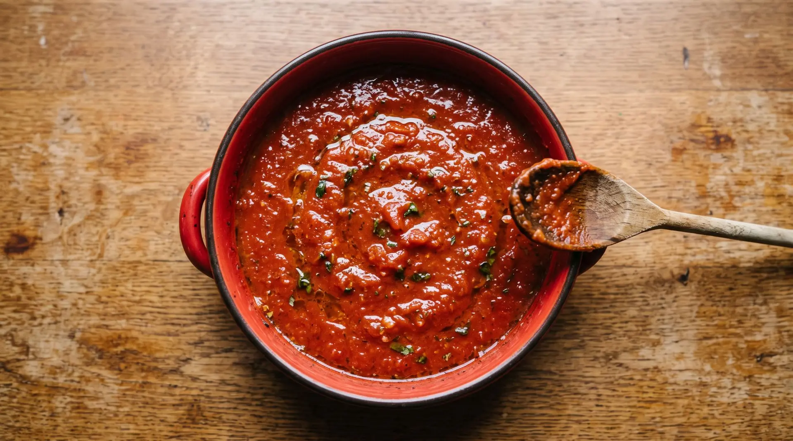

feito pra juntar
Tratamento. Visão do diretor, por Harbor.
a ideia central
Uma mulher procura o Elefante na própria cozinha e, para encontrá-lo, atravessa a própria vida.
O filme parte de um gesto doméstico. A receita está no fogo, falta o extrato, e ela pergunta em voz alta onde ele foi parar. A partir daí, cada portal leva a protagonista a um mundo em que a marca já estava presente: a cozinha da mãe nos anos 1990, uma passarela de moda, um jantar entre amigos, uma tarde no zoológico com o filho.
A busca pelo pote vira uma volta pelos encontros que esse sabor juntou ao longo dos anos. Quando ela retorna ao ponto de partida, o Elefante estava ali o tempo todo, e as pessoas que ela visitou chegam para a mesma bancada.
São 85 anos de Elefante em cozinhas brasileiras, contados como lembrança vivida, em primeira pessoa.
passagens de tempo e encontros
A proposta do portal nos convida a atravessar diferentes mundos para descobrir Elefante presente nas histórias e nos encontros dessa família.
Na direção, queremos que essas passagens tenham uma continuidade visual e afetiva, conduzindo o espectador pela vida da protagonista com fluidez, surpresa e emoção.
Três referências oferecem caminhos para construir essa linguagem. Elas funcionam como alternativas: a escolha parte da emoção e do ritmo de cada passagem, mantendo uma unidade ao longo do filme.
Planejaremos os movimentos de câmera e as ações dos personagens para que cada mudança tenha uma conexão clara com a cena seguinte, dando ao espectador tempo para reconhecer o novo ambiente e se envolver com o encontro.
split + match cut
A conexão acontece pela continuidade dos movimentos e pela aproximação entre enquadramentos.
Diferentes espaços se encontram dentro da mesma composição, permitindo que uma ação iniciada em um ambiente prossiga no seguinte. Podemos explorar esse princípio nas travessias da protagonista: ela começa a caminhar em uma época e completa o movimento em outra, agora com uma nova idade, figurino e contexto.
O gesto permanece enquanto o mundo se transforma ao seu redor.
transições suaves
Uma abordagem mais sensível à passagem do tempo.
As imagens se sobrepõem e os ambientes se modificam gradualmente, conectando etapas da vida através de espaços e relações que reconhecemos. Esse caminho tem especial força no encontro com a mãe, na cozinha dos anos 1990.
A madeira da cozinha de hoje vai cedendo ao azulejo estampado, ao fogão de quatro bocas e à TV de tubo. A luz esquenta, e o chiado do vinil sobe por baixo da trilha.
A transformação da mulher em menina pode acontecer durante a aproximação, fazendo com que a chegada ao abraço carregue a emoção de reencontrar uma memória.
virada de página
Recortes e molduras reorganizam a imagem, revelando novas cenas como capítulos de um álbum vivo.
Para o nosso filme, essa lógica permite apresentar cada universo como uma descoberta: a próxima história surge dentro da imagem atual, ganha espaço e passa a envolver a personagem.
É uma possibilidade de dar forma aos portais do roteiro com uma linguagem gráfica que também pode dialogar com os recortes da cena final, onde o círculo da embalagem se preenche com as cenas do filme.
o portal
Também vamos pesquisar graficamente como o portal se revela e se integra a cada transição.
Exploraremos sua forma, textura e movimento em sintonia com a câmera e com a ação dos personagens. Queremos que ele se comporte de maneira suave e reflita a emoção de cada passagem, acompanhando tanto a delicadeza de uma lembrança quanto a alegria de um novo encontro.
O ponto de partida é o recorte circular que já aparece no roteiro, parente da boca do pote e do círculo da cartela final. Ele abre primeiro como uma fresta e cresce no ritmo do passo da protagonista.
Assim, o portal participa da narrativa e nos conduz entre épocas e ambientes com naturalidade, preservando a conexão afetiva com a protagonista.

o som
O som também participa dessa construção.
As duas batidas recorrentes no roteiro podem marcar o instante da transformação. Elas aparecem em todos os mundos: as batidinhas na bancada, a colher na panela da mãe, os dois flashes no fim da passarela, os dois beijinhos no ar, os dois toques na blusa do filho e, de novo, a colher na panela no final.
Enquanto isso, a música e os sons do próximo ambiente começam a chegar antes da mudança visual: o vinil abafado dos anos 1990, os aplausos e os flashes da passarela, as conversas e risadas do jantar, a natureza e as vozes de criança do zoológico.
Assim, ouvimos uma nova história se aproximar e acompanhamos a protagonista em sua descoberta.
fotografia e arte
A luz muda a cada travessia, e a marca está presente em todos os mundos.
Luz quente e ambientes bem iluminados, em casas de classe AB com decoração aconchegante e toques de modernidade. As cozinhas são amplas, com espaço para várias pessoas em volta da bancada de preparo.
Figurino e cenário carregam vermelho e verde como prioridade, com amarelo e laranja de apoio. Objetos em forma de elefante entram na decoração, e o molho aparece sempre espesso.
- hojedourado da manhãa cozinha da protagonista, com o sol entrando pela janela
- memóriastungstênio quentea cozinha da mãe nos anos 1990, luz abafada e vapor
- momentosbranco duro e flashesa passarela, com aplausos e câmeras
- saboresâmbar noturnoo jantar entre amigos em volta da ilha
- afetofim de tardeo zoológico, luz baixa entre as árvores
produção híbrida
Uma das propostas é realizar o filme de forma híbrida, combinando filmagem real com inteligência artificial.
Faremos a seleção e a produção de todo o casting, buscando personagens que transmitam a proximidade e o afeto dessa família. Nas cenas da casa e do zoológico, filmaremos suas ações em um estúdio neutro, com os objetos de interação e as bancadas em primeiro plano. Essa base física permite dirigir os gestos e as trocas de olhar com naturalidade, preservando a emoção das performances.
A partir desse material, construiremos os ambientes com IA, compondo as diferentes épocas e os mundos que a protagonista atravessa. Cenários, luz e perspectiva serão planejados em conjunto com a filmagem para integrar os personagens a cada espaço e dar unidade visual ao filme.
Assim, a tecnologia amplia as possibilidades de criação, enquanto a atuação real sustenta a conexão com o público.
A sequência da passarela de moda será realizada integralmente em IA, tomando como referência a identidade visual da protagonista escolhida no casting. Esse caminho permite explorar o vestido inspirado em Elefante e a atmosfera do desfile, otimizando a produção dessa cena.
O formato híbrido também favorece a construção das transições e dos portais, que serão desenvolvidos em sintonia com os movimentos dos personagens e a emoção de cada passagem.
Casting real em estúdio neutro; épocas, cenários e luz em IA.
A partir da identidade visual da protagonista do casting.
Guiados pelos movimentos dos personagens filmados.
Todo o processo parte de uma mesma visão de direção, para que as cenas filmadas e as imagens geradas componham uma experiência contínua, acolhedora e visualmente coesa.
100% IA
A outra proposta é realizar o filme inteiramente com inteligência artificial, da protagonista aos mundos que ela atravessa.
O ponto de partida continua sendo o casting. Definimos cada personagem, a protagonista nas suas duas idades, a mãe, o filho, os amigos e o estilista, e construímos para cada um uma referência visual fixa, com rosto, corpo, figurino e gestual. Essa referência acompanha todas as gerações e faz com que a família seja reconhecida de um mundo para o outro.
Cada plano nasce como um quadro-chave e é aprovado como imagem antes de ganhar movimento. Só então animamos, com a câmera desenhada a partir das referências de travessia. Portais, transições e letreiros são compostos na pós, onde também entram as embalagens reais de Elefante e o Jotalhão em 2D, para que a marca apareça sempre fiel.
Sem estúdio e sem locação, a cozinha dos anos 1990, a passarela, o jantar e o zoológico ficam inteiramente nas mãos da direção, e cada mundo pode ser ajustado até a aprovação final.
Para fugir da estética artificial, tratamos a imagem como cinema: luz motivada, foco suave, grão de película e atuações contidas, conduzidas pela mesma direção que guiaria um set.
- 01personagensreferência fixa de rosto, figurino e gestual para cada integrante da família
- 02quadros-chavecada plano aprovado como imagem antes de virar movimento
- 03animaçãocâmera e ação desenhadas a partir das referências de travessia
- 04finalizaçãoportais, letreiros, embalagens reais e Jotalhão 2D compostos na pós
Os quadros deste tratamento já foram feitos assim.
técnicas e integração
Para a construção das cenas, vamos explorar diferentes técnicas e ferramentas de integração entre o material filmado e as imagens geradas por IA, escolhendo os recursos mais adequados a cada situação.
Essa pesquisa contempla a composição dos ambientes e a integração de luz, textura e movimento, além das transições entre os mundos.
As referências ajudam a orientar essas possibilidades, sempre buscando um resultado natural, com unidade cinematográfica e sensível à emoção de cada cena.
- composição dos ambientes
- luz, textura e movimento
- transições entre os mundos
Referência de híbrido: a mesma câmera e o mesmo movimento da filmagem, com outro personagem e outro ambiente construídos sobre ela.
um círculo, todos os mundos
O encerramento reúne em uma só imagem os sabores e os encontros que acompanhamos ao longo do filme.
Partimos do top view da panela e conectamos seu formato circular ao da embalagem aberta de Elefante. A receita vira extrato numa passagem contínua, e o olhar de cima deixa em primeiro plano a textura e a consistência do produto.
Sobre essa imagem, os letreiros entram em movimento: Elefante. Feito pra juntar. Em seguida vêm memórias, momentos, sabores, afeto e todo mundo. Cada palavra retoma uma experiência vivida pela protagonista e prepara a transformação da embalagem no mosaico final.
O círculo segue como elo visual, e a imagem do produto dá lugar à composição do KV. Como na referência, as cenas se revelam aos poucos dentro dos recortes: cada mundo ocupa o seu espaço no ritmo da trilha, até o círculo se completar com as pessoas que encontramos pelo caminho. É o mesmo recorte dos portais, agora com todos os mundos abertos ao mesmo tempo.
Lettering: Junte-se aos Mundos de Elefante. Elefante 85 anos. Feito pra juntar.
Loc. off: Elefante. Feito pra juntar.

feito pra juntar
Ao reunir essas possibilidades, damos expressão cinematográfica ao conceito Feito pra juntar.
Elefante conecta a lembrança da infância à vida adulta e aproxima gerações em torno de sabores e gestos familiares.
Cada travessia prepara o encontro final, quando as pessoas que conhecemos ao longo da jornada se reúnem na mesma cozinha.